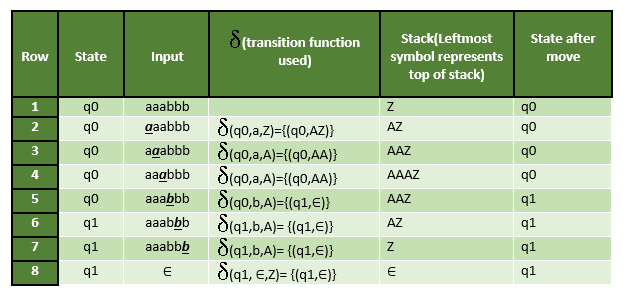

We have already discussed finite automata. But finite automata can be used to accept only regular languages.
Pushdown Automata is a finite automata with extra memory called stack which helps Pushdown automata to recognize Context Free Languages.
A Pushdown Automata (PDA) can be defined as :
- Q is the set of states
- ∑ is the set of input symbols
- Γ is the set of pushdown symbols (which can be pushed and popped from stack)
- q0 is the initial state
- Z is the initial pushdown symbol (which is initially present in stack)
- F is the set of final states
- δ is a transition function which maps Q x { ∑ ∪ ɛ } x Γ into Q x Γ *. In a given state, PDA will read input symbol and stack symbol (top of the stack) and move to a new state and change the symbol of stack.
Example : Define the pushdown automata for language {anbn | n > 0}
Solution : M = where Q = { q0, q1 } and ∑ = { a, b } and Γ = { A, Z } and δ is given by :
δ( q0, a, Z ) = { ( q0, AZ ) }
δ( q0, a, A) = { ( q0, AA ) }
δ( q0, b, A) = { ( q1, ɛ) }
δ( q1, b, A) = { ( q1, ɛ) }
δ( q1, ɛ, Z) = { ( q1, ɛ) }
Let us see how this automata works for aaabbb.

Explanation : Initially, the state of automata is q0 and symbol on stack is Z and the input is aaabbb as shown in row 1. On reading ‘a’ (shown in bold in row 2), the state will remain q0 and it will push symbol A on stack. On next ‘a’ (shown in row 3), it will push another symbol A on stack. After reading 3 a’s, the stack will be AAAZ with A on the top. After reading ‘b’ (as shown in row 5), it will pop A and move to state q1 and stack will be AAZ. When all b’s are read, the state will be q1 and stack will be Z. In row 8, on input symbol ‘ɛ’ and Z on stack, it will pop Z and stack will be empty. This type of acceptance is known as acceptance by empty stack.
Note :
- The above pushdown automaton is deterministic in nature because there is only one move from a state on an input symbol and stack symbol.
- The non-deterministic pushdown automata can have more than one move from a state on an input symbol and stack symbol.
- It is not always possible to convert non-deterministic pushdown automata to deterministic pushdown automata.
- Power of non-deterministic PDA is more as compared to deterministic PDA as some languages which are accepted by NPDA but not by deterministic PDA which will be discussed in next article.
- The push down automata can either be implemented using empty stack or by final state and one can be converted to another.
Question : Which of the following pairs have DIFFERENT expressive power?
A. Deterministic finite automata(DFA) and Non-deterministic finite automata(NFA)
B. Deterministic push down automata(DPDA)and Non-deterministic push down automata(NPDA)
C. Deterministic single-tape Turing machine and Non-deterministic single-tape Turing machine
D. Single-tape Turing machine and multi-tape Turing machine
Solution : Every NFA can be converted into DFA. So, there expressive power is same. As discussed above, every NPDA can’t be converted to DPDA. So, the power of NPDA and DPDA is not same. Hence option (B) is correct.